Présentation
1. Barre d'état
La barre d'état se trouve en haut de l'interface. Elle affiche en temps réel les données des indicateurs essentiels et permet de commander ces indicateurs.
2. Barre des tâches
La barre des tâches se trouve en bas de l'interface. Elle permet de gérer les fichiers G-Code, de configurer, de suivre et de commander le processus d'usinage.
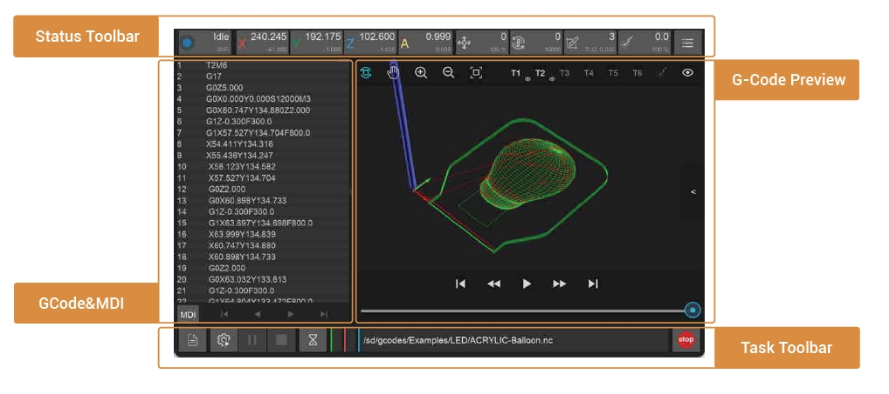
3. G-Code et MDI
Par défaut, cette interface affiche le G-Code du fichier actuellement ouvert. Elle peut être basculée vers les informations des commandes envoyées à la machine et reçues de celle-ci.
4. Aperçu du G-Code
L'aperçu du G-Code affiche graphiquement le G-Code du fichier actuellement ouvert.
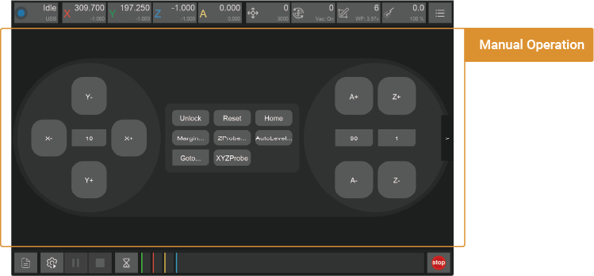
5. Commande manuelle
Commandez manuellement les déplacements de la Carvera Air et exécutez d'autres commandes. Comme la Carvera Air effectue automatiquement la plupart des opérations, l'interface de commande manuelle est masquée par défaut. Cliquez sur la flèche à droite de l'interface pour choisir de l'afficher ou non.
Barre d'état
Chaque indicateur comporte 3 éléments : un symbole, une donnée principale et une donnée secondaire. Cliquez sur le bouton pour ouvrir la liste déroulante correspondante.
1. État et commande de la machine
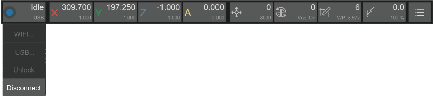
1.1. Symbole : une couleur unique permet de distinguer l'état.
1.2. Donnée principale : explication de l'état de l'appareil.
1.3. Donnée secondaire : mode de connexion actuel (aucune connexion, WiFi ou USB).
1.4. Liste déroulante :
1.4.1. WIFI: connecter la Carvera par WiFi.
1.4.2. USB: connecter la Carvera par USB.
1.4.3 Déverrouiller/Réinitialiser: déverrouiller ou réinitialiser la Carvera.
1.4.4. Déconnecter: déconnecter la Carvera de votre appareil.
Explication des différents états de la Carvera Air :
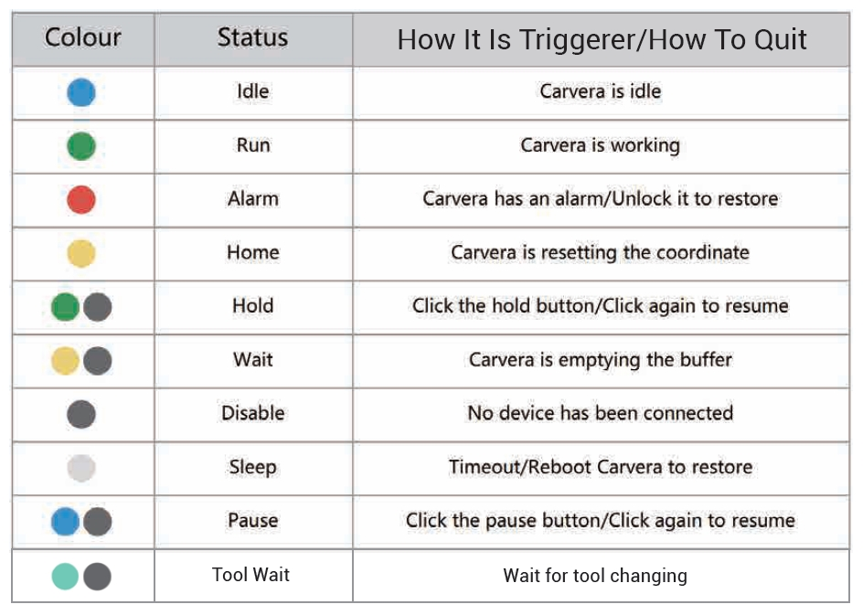
2. État et commande de la position
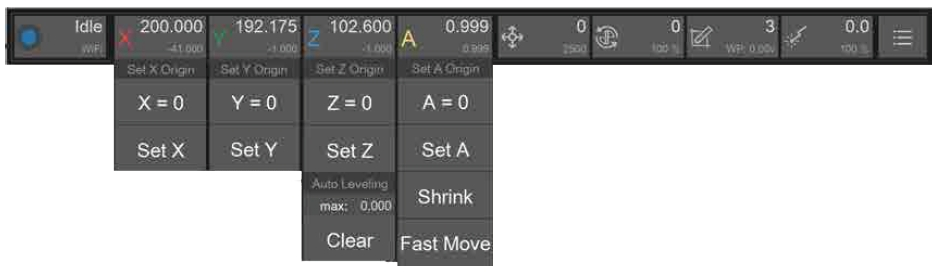
2.1. Symboles : X/Y/Z/A
2.2. Donnée principale : coordonnées de travail (position de l'outil par rapport à l'origine de travail). Cette position dépend de l'emplacement de la pièce et de l'endroit où vous souhaitez commencer l'usinage.
2.3. Donnée secondaire : coordonnées machine (position de l'outil par rapport à l'origine machine). L'origine machine est fixe et se trouve dans l'angle supérieur droit de la machine; ces coordonnées sont donc généralement négatives.
2.4. Liste déroulante :
2.4.1 Définir l'origine : utilisez cette option pour définir les coordonnées de travail des axes X, Y, Z et A. Vous pouvez les mettre à zéro ou saisir une valeur précise à partir de la position actuelle. En général, la Carvera Air utilise deux points d'ancrage fixes pour définir automatiquement le point de départ; vous n'avez donc habituellement pas besoin de définir l'origine manuellement.
2.4.2 Axe rotatif (axe A) :
Fonction Shrink : permet de calculer le reste de l'angle de rotation modulo 360 degrés lors de grands angles de rotation.
Fonction Fast Move : exécute d'abord la fonction « Shrink », puis effectue directement la rotation vers la position indiquée.
3. État et commande des avances
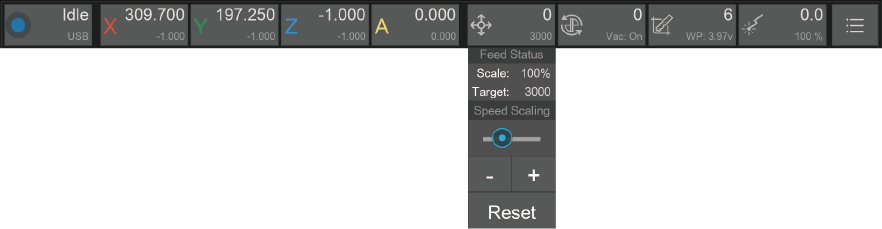
3.1. Symbole : icône d'avance
3.2. Donnée principale : vitesse d'avance en temps réel
3.3. Donnée secondaire : vitesse d'avance cible/échelle de vitesse d'avance (message défilant)
3.4. Liste déroulante :
3.4.1. État des avances : vitesse d'avance cible/échelle de vitesse d'avance
3.4.2. Échelle de vitesse : définissez le débit d'avance en pourcentage. Pour des raisons de sécurité, la plage de réglage est limitée de 50% à 200%.
Remarque : le réglage du débit d'avance ne prend pas effet immédiatement. Il faut généralement attendre quelques secondes que la commande en cours se termine.
4. État et commande de la broche
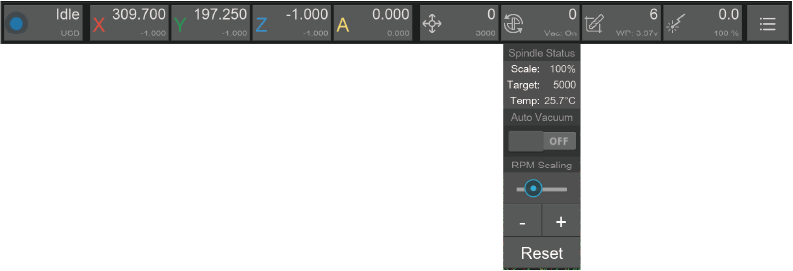
4.1. Symbole : icône de broche
4.2. Donnée principale : vitesse de rotation de la broche en temps réel (RPM)
4.3. Donnée secondaire : vitesse de rotation cible de la broche/échelle de vitesse de broche/température de la broche en temps réel (message défilant)
4.4. Liste déroulante :
4.4.1. État de la broche : affichage récapitulatif de la vitesse de rotation cible de la broche/plage de vitesse de broche/température de la broche en temps réel
4.4.2. Auto Vacuum : choisissez d'activer ou de désactiver l'aspiration automatique pendant la rotation de la broche. Par défaut : activée.
4.4.3. Échelle RPM : définissez la plage de vitesse de la broche en pourcentage. Pour des raisons de sécurité, la plage de réglage est limitée de 50% à 200%.
Remarque : l'activation de l'aspiration ou le réglage de la vitesse de rotation de la broche ne prend pas effet immédiatement. Il faut généralement attendre quelques secondes que la commande en cours se termine.
5. État et commande de l'outil
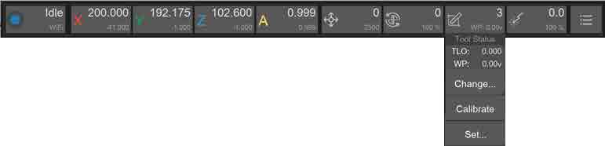
5.1. Symbole : icône d'outil
5.2. Donnée principale : affiche le numéro de 1 à 6 de l'outil actuellement monté sur la broche; aucun outil : « None »; sonde sans fil : « Probe »
5.3. Donnée secondaire : correction de longueur d'outil actuelle (TLO)/charge de la sonde sans fil (message défilant)
5.4. Liste déroulante :
5.4.1 État de l'outil : affichage récapitulatif de la TLO/charge de la sonde sans fil
5.4.2. Changer d'outil : remplacez l'outil par celui sélectionné ou par la sonde sans fil, puis effectuez l'étalonnage automatique.
5.4.3. Étalonner l'outil : étalonnez automatiquement l'outil actuel et définissez la TLO.
5.4.4. Déposer l'outil : déposez l'outil actuel.
5.4.5. Définir l'outil : définissez manuellement le numéro de l'outil actuel. À utiliser uniquement lorsque le numéro de l'outil est incorrect.
6. État et commande du laser
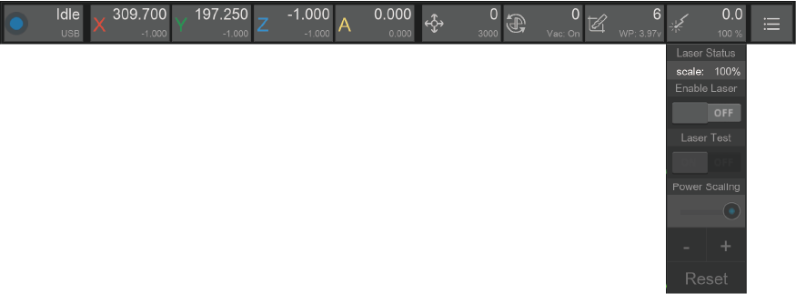
6.1. Symbole : icône du laser
6.2. Donnée principale : puissance actuelle du laser
6.3. Donnée secondaire : échelle de puissance du laser
6.4. Liste déroulante :
6.4.1. État du laser : échelle de puissance du laser
6.4.2. Activer le laser : passez en mode laser. Les coordonnées de travail sont automatiquement mises à jour selon le décalage prédéfini. Si un outil est monté sur la broche actuelle, la Carvera le dépose d'abord puis effectue un nouvel étalonnage pour vérifier la hauteur de la tête laser.
6.4.3. Test du laser : effectuer un test du laser après l'activation du mode laser déclenche un faisceau laser de faible puissance pour l'étalonnage de la mise au point.
6.4.4. Échelle de puissance : définissez la plage de puissance du laser en pourcentage. Pour des raisons de sécurité, la plage de réglage est limitée de 50% à 200%.
Remarque : la Carvera a déjà défini le décalage de coordonnées du laser avant la livraison; ne le réinitialisez que si les coordonnées dévient. Nous ajouterons des tutoriels correspondants dans les instructions en ligne.
7. Autres fonctions
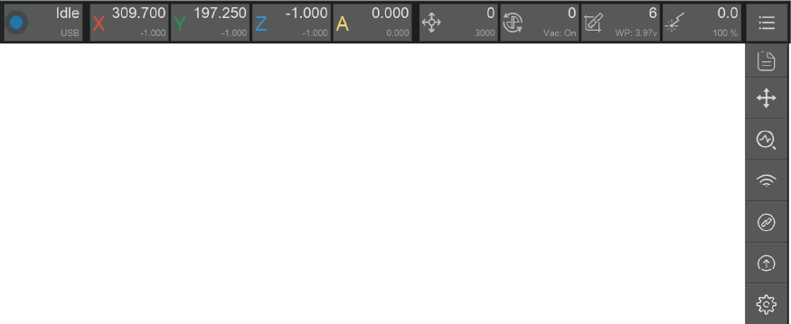
7.1. Commande manuelle : même fonction que le bouton fléché situé à droite de l'interface. Basculez pour afficher l'interface de commande manuelle et celle de prévisualisation des fichiers.
7.2. Diagnostic de l'état de l'appareil : vérifiez votre Carvera en détail et effectuez le dépannage. Il n'est pas nécessaire d'utiliser cette fonction lorsque la Carvera Air fonctionne correctement. Nous ajouterons un tutoriel dans la version officielle du manuel d'instructions.
7.3. Configuration WiFi : reportez-vous aux instructions de configuration WiFi du chapitre 4.
7.4. Mise à niveau du logiciel :
7.4.1. Controller : mise à niveau du logiciel de commande
7.4.2. Firmware : mise à niveau du micrologiciel
7.4.3. Download : lien vers la page de téléchargement
7.4.4. Upgrade : pour le logiciel de commande, installez simplement la nouvelle version pour pouvoir l'utiliser. Pour le micrologiciel, vous devez le téléverser sur la machine avec le logiciel de commande.
7.4.5. Check at Startup : recherchez les mises à jour du logiciel et affichez une notification au démarrage.
7.5. Sélection de la langue
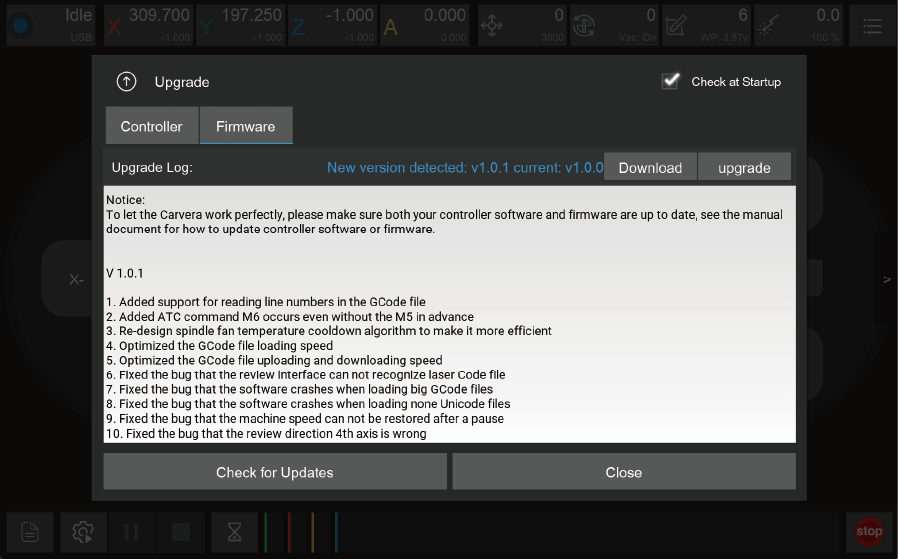
7.6. Réglages des paramètres :
7.6.1. Paramètres de base : ajustez les paramètres fonctionnels selon vos besoins.
7.6.2. Paramètres avancés : paramètres de niveau système de la machine. Les réglages d'usine n'ont généralement pas besoin d'être modifiés. Ne les modifiez qu'en cas de nécessité.
7.6.3. Restaurer les réglages : restaurez les réglages d'usine ou enregistrez les réglages actuels comme réglages d'usine.
Remarque : vous devez cliquer sur le bouton Apply pour enregistrer tous les paramètres après les avoir modifiés, puis redémarrer la machine pour appliquer les changements. La liste des paramètres présente leur description et les réglages recommandés. Nous ajouterons des descriptions plus détaillées et des suggestions de réglage dans le manuel d'instructions en ligne.
Barre des tâches
1. Gestion et sélection des fichiers
Le G-Code de la Carvera Air est exécuté dans le contrôleur afin de garantir l'efficacité et la stabilité de la tâche et d'éviter les échecs dus à l'instabilité de la connexion WiFi ou USB. Le fichier G-Code doit donc être téléversé sur la machine avant l'exécution du programme. Nous avons créé un dossier d'exemples sur la machine et y avons déjà téléversé des fichiers G-Code d'exemple.
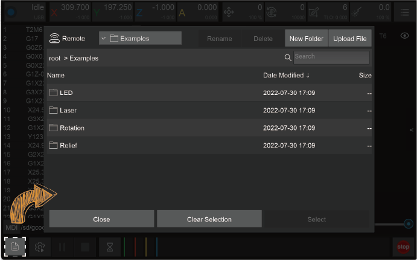
1.1. Gestion des fichiers distants :
1.1.1. Renommer : renommez les fichiers ou dossiers de la machine.
1.1.2. Supprimer : supprimez les fichiers ou dossiers de la machine.
1.1.3. Nouveau dossier : créez un dossier sous le chemin de fichier actuel.
1.1.4. Téléverser un fichier : basculez vers l'interface des fichiers locaux pour téléverser un fichier.
1.1.5. Fermer : fermez l'interface de gestion des fichiers.
1.1.6. Effacer la sélection : désélectionnez le fichier G-Code actuellement sélectionné.
1.1.7. Sélectionner des fichiers : sélectionnez le fichier G-Code à exécuter.
1.1.8. Emplacements récents : raccourci vers les répertoires récemment utilisés.
1.2. Parcourir les fichiers locaux :
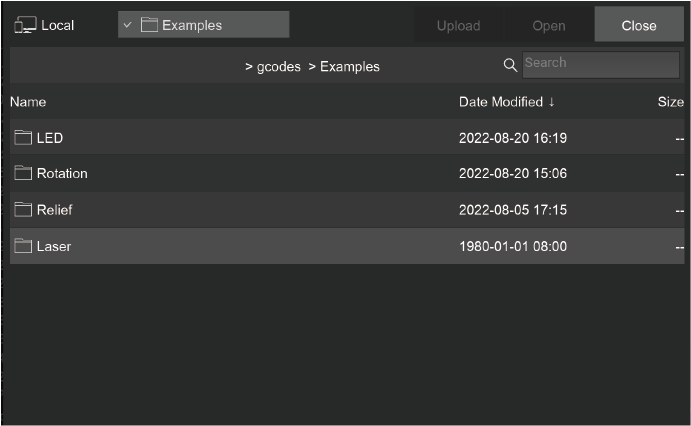
Par défaut, ce bouton ouvre le sous-répertoire gcodes du répertoire d'installation du programme local. Nous recommandons donc d'y placer vos fichiers G-Code pour en faciliter la gestion.
Téléverser : sélectionnez et téléversez des fichiers locaux.
Ouvrir : ouvrez le fichier et prévisualisez-le sans le téléverser (vous pouvez aussi le faire sans vous connecter à la Carvera).
Fermer : revenez à l'interface de gestion des fichiers distants.
Emplacements récents : raccourci vers les répertoires récemment utilisés.
2. Configuration et exécution de la tâche
Si vous avez déjà utilisé une CNC, vous savez certainement qu'une tâche d'usinage CNC nécessite beaucoup de préparation, notamment le réglage des coordonnées de travail (réglage d'outil sur les axes XY), le réglage d'outil sur l'axe Z, le nivellement de la pièce (usinage de circuit imprimé), etc.
Comme la Carvera Air dispose de fonctions de détection et de nivellement automatiques, nous avons regroupé ces réglages et l'exécution de la tâche dans une seule interface.
Nous proposons une méthode innovante qui utilise des « points d'ancrage » pour définir les coordonnées de travail et permet de positionner précisément les axes XY grâce à une configuration simple.
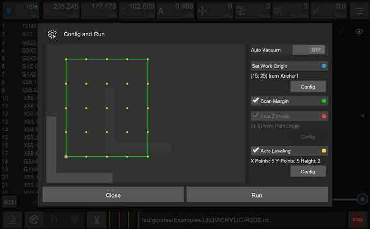
2.1. Auto Vacuum : permet à la machine d'activer ou de désactiver automatiquement le signal de collecte des poussières pendant l'exécution de la tâche, afin de commander automatiquement un équipement externe de collecte des poussières. Nous fournirons des instructions détaillées dans le chapitre « Kit d'outils ».
2.2. Aperçu de la zone d'usinage : affiche l'aperçu de la zone d'usinage selon les coordonnées de travail et le fichier G-Code actuels.
Symbole gris en forme de L : position du point d'ancrage. Vous pouvez choisir d'installer l'équerre en L au point 1 ou au point 2.
Bleu Cercle : position zéro des coordonnées de travail.
Vert zone linéaire : plage d'usinage du fichier G-Code.
Vert Zone en trait gras : indique que Scan Margin est activé pour balayer automatiquement la zone avant l'usinage.
Rouge Cercle : position de la sonde Z lorsque Auto Z Probe est sélectionné.
Jaune Matrice de cercles : matrice de nivellement lorsque Auto Leveling est sélectionné.
2.3. Définir l'origine de travail : définissez le point zéro des coordonnées de travail par rapport aux points d'ancrage : la distance sur l'axe X/Y par rapport au point d'ancrage 1 ou 2. (Seule la distance X est nécessaire pour l'usinage sur quatre axes.) Notez que les réglages des coordonnées de travail prennent effet immédiatement.
2.4. Scan Margin : balayez la zone rectangulaire du parcours avant l'usinage. Pendant le balayage, la machine passe à la sonde sans fil et allume le laser rouge pour l'observation. Nous recommandons aux nouveaux utilisateurs d'activer cette fonction pendant l'exécution d'une tâche.
2.5. Auto Z Probe : le réglage de l'outil sur l'axe Z est nécessaire après le changement de pièce ou du point zéro des coordonnées de travail. Lors du palpage Z, la machine passe automatiquement à la sonde sans fil et effectue le palpage à la position définie.
Origine de travail : effectue le palpage de l'axe Z à une distance donnée par rapport au point zéro des coordonnées de travail sur les axes X/Y.
Origine du parcours : effectue le palpage de l'axe Z à une distance donnée par rapport au point de départ réel de l'usinage X/Y (coin inférieur gauche). Cette méthode est sélectionnée par défaut.
2.6. Auto Leveling : si une profondeur d'usinage uniforme est nécessaire, sélectionnez le nivellement automatique, par exemple pour la gravure de circuits imprimés. Vous pouvez définir la taille de la matrice de nivellement et la hauteur de levée lors des déplacements horizontaux pendant le nivellement. Plus la planéité est faible, plus la hauteur de levée doit être importante. Plus l'exigence de régularité d'usinage est élevée, plus la matrice doit être dense. Pour la gravure de circuits imprimés, il est préférable d'espacer les points de la matrice d'environ 1 cm.
2.7. Run : cliquez pour démarrer l'usinage. Si vous avez défini une zone de balayage, un réglage d'outil sur l'axe Z ou un nivellement automatique, le fichier G-Code sera exécuté une fois la détection automatique terminée.
Remarque : la sonde filaire est un dispositif précis qui intègre des éléments mécaniques et électroniques et peut être facilement endommagé. Soyez prudent lors de son utilisation. Vérifiez qu'aucun obstacle ne bloque sa trajectoire. Nous recommandons aux nouveaux utilisateurs d'activer la fonction Scan Margin pour prévisualiser le parcours. Il est recommandé de laisser une marge suffisante entre la position de l'équerre en L et le point de départ du parcours, supérieure ou égale à 10/10mm.
3. Commande de la tâche
3.1. Pause de la tâche : mettez en pause la tâche G-Code en cours; vous pourrez ensuite commander manuellement la machine. Si vous souhaitez reprendre la tâche, pensez à allumer la broche, car la reprise sans rotation de la broche pourrait endommager l'outil.
3.2. Arrêt de la tâche : mettez fin à la tâche G-Code actuelle.
3.3. Maintien de la tâche : similaire à la pause, mais la vitesse de mise en pause est plus élevée et vous ne pouvez pas commander manuellement la machine pendant le maintien.
3.4. Suivi de la tâche : affiche le nom de la tâche G-Code actuelle, sa durée d'exécution, son pourcentage d'avancement et d'autres informations.
3.5. Arrêt d'urgence : arrête immédiatement la tâche en cours et éteint la broche; cette fonction est identique à celle du bouton physique situé à l'avant de la machine.
Remarque : la tâche en cours ne peut pas être arrêtée immédiatement lorsqu'elle est en pause ou maintenue. Il faut attendre la fin de la zone tampon. En cas d'urgence nécessitant l'arrêt immédiat de la machine, cliquez sur le bouton d'arrêt d'urgence du logiciel ou appuyez sur le bouton physique du panneau avant. La Carvera Air est équipée de servomoteurs en boucle fermée et enregistre les coordonnées et l'état à chaque étape. Il n'est donc pas nécessaire de réinitialiser l'outil après un redémarrage ou un déverrouillage.
G-Code/MDI
1. Interface G-Code : affiche le fichier G-Code distant ou local actuellement ouvert. Pendant l'exécution de la tâche, elle suit la ligne en cours et la met en évidence en temps réel.
2. MDI : affiche les commandes détaillées envoyées et reçues, comme les informations d'un journal. Dans certains cas, vous pouvez saisir manuellement du G-Code pour commander et diagnostiquer la machine. Saisissez « clear » pour effacer la zone de commande actuelle.
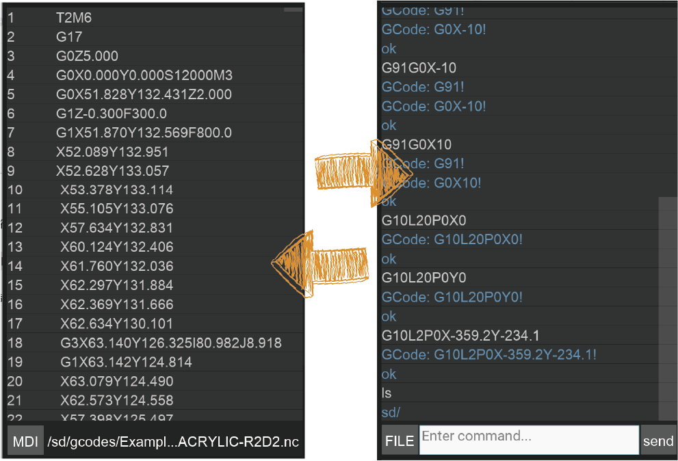
Aperçu du G-Code
1. Aperçu graphique : ouvrez le fichier G-Code pour prévisualiser les graphiques G-Code dans la zone d'aperçu du parcours d'outil. Les lignes vertes correspondent aux commandes G1/G2/G3 et les lignes rouges aux déplacements rapides G0.
2. Barre de commande de l'affichage : vous pouvez déplacer la vue (bouton droit de la souris), la faire pivoter (bouton gauche), zoomer (molette vers le haut), dézoomer (molette vers le bas) et rétablir l'aperçu (double-clic). Vous pouvez également choisir d'afficher ou de masquer les G-Code des différents outils.
3. Barre de lecture : lorsque la tâche n'est pas en cours, vous pouvez lire l'aperçu, avancer rapidement ou revenir en arrière. Lorsque la tâche est en cours, le graphique d'aperçu affiche la trajectoire d'usinage en temps réel.
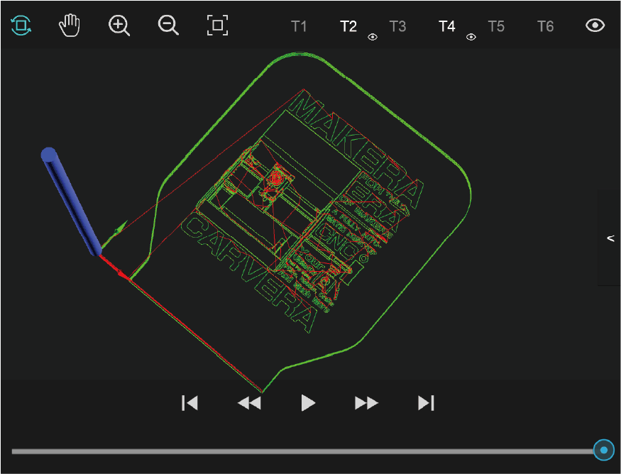
Commande manuelle
1. Commande de déplacement : commandez manuellement le déplacement des axes X/Y/Z et faites tourner l'axe A à la vitesse rapide G0 (3000mm/min par défaut). Vous pouvez définir la distance de déplacement. La
2. Commande d'état : vous pouvez déverrouiller, redémarrer ou réinitialiser l'appareil.
3. Détection automatique : balayez automatiquement la zone d'usinage, effectuez le palpage de l'axe Z ou le nivellement automatique. Contrairement à la configuration de tâche, cette fonction permet d'effectuer une détection ponctuelle sans exécuter le fichier G-Code.
4. Déplacer vers un emplacement défini : offre un raccourci pour accéder rapidement à un emplacement précis, notamment aux points d'ancrage 1 et 2, aux points zéro de travail, au point de départ du G-Code et au point de dégagement (par défaut, l'angle supérieur droit près des points zéro machine). Vous pouvez y déplacer rapidement la machine avant de nettoyer la surface de travail à la fin de l'usinage.
5. Définir l'origine : définissez manuellement les coordonnées de l'origine de travail ou utilisez la sonde manuelle pour effectuer le palpage des axes X, Y et Z. Consultez les explications détaillées au chapitre suivant.
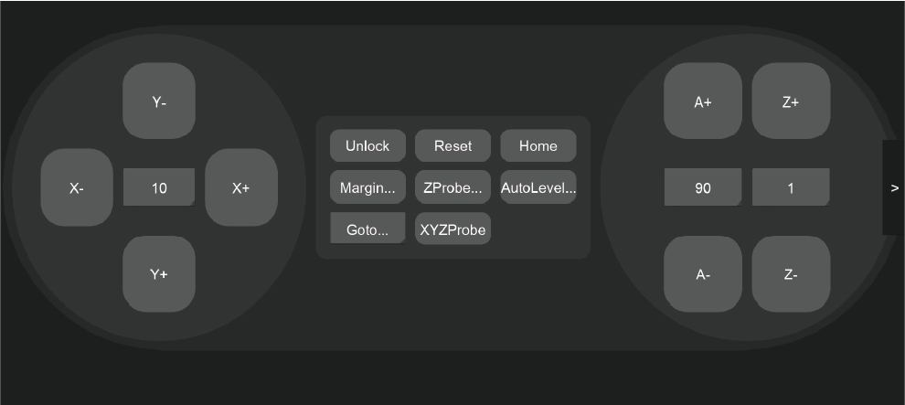
Erreurs
L'appareil déclenche une alarme lorsqu'il rencontre une anomalie. Certaines alarmes peuvent être désactivées par un déverrouillage. D'autres nécessitent un redémarrage de la machine.
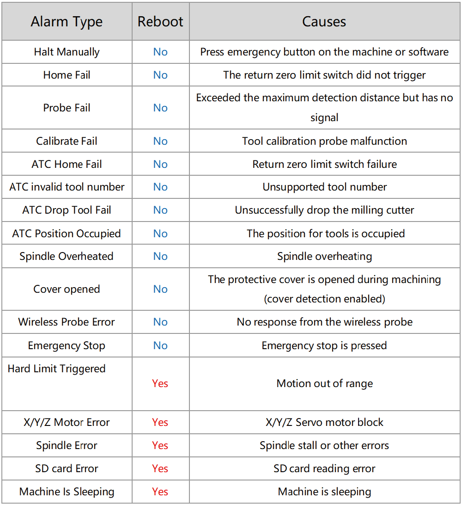
Procédure générale
Contrairement au processus d'utilisation fastidieux des CNC classiques, la Carvera Air simplifie considérablement l'usinage. Les étapes générales sont les suivantes :
1. Allumez la Carvera Air et attendez la fin de la prise d'origine.
2. Fixez la pièce au point d'ancrage.
3. Ouvrez le logiciel de commande et connectez-vous à la machine.
4. Téléversez et ouvrez le fichier G-Code.
5. Ouvrez la boîte de réglage de la tâche et définissez l'origine de travail ainsi que les règles de détection automatique.
6. Démarrez la tâche et changez d'outil lorsqu'une commande de changement est déclenchée et que la machine vous le demande.
7. Attendez la fin du processus d'usinage.